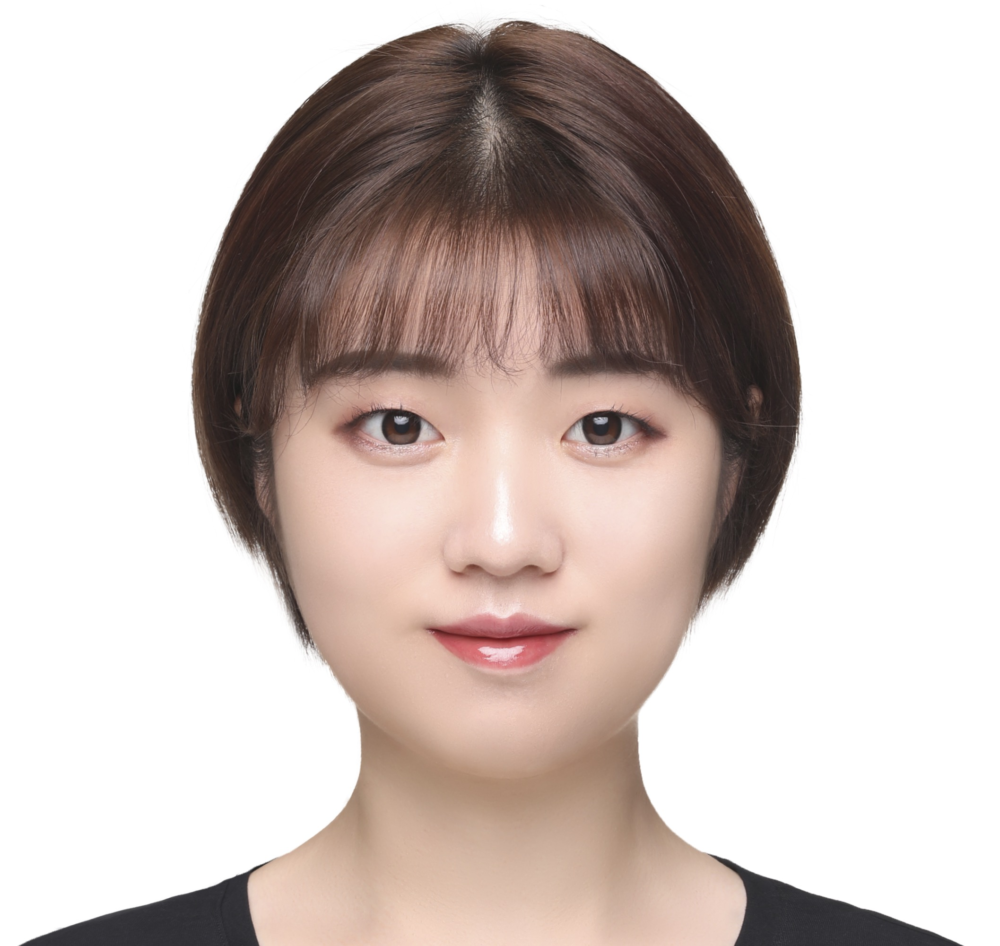

|
Yunping Zhang
|

|
PhD Candidate,
Imaging Systems Lab / Department of Electrical and Electronic Engineering (EEE)
The University of Hong Kong
yp000925@connect.hku.hk
yp000925@outlook.com
Google Scholar |Facebook |LinkedIn| Instagram
|
About me
My name is Yunping (Sherry), currently a 4th year PhD candidate from the department of Electrical and
Electronic Engineering at the University of Hong
Kong , supervised by Prof.Edmund Y.
Lam .
My research interest includes but not restricted to digital holography, computational imaging, physics-informed network and generative modeling.
I am expected to graduate in Fall 2024 and excited about embarking on new research endeavors as a postdoctoral researcher, where I can continue to push the boundaries of knowledge.
Please feel free to contact me to discuss any potential opportunities or to request additional information.
Education
PhD Candidate, Department of Electrical and Electronic Engineering / Imaging Systems Lab,
The University of Hong Kong. (Sept 2020 to now)
M.Sc (with Distinction), Department of Electronic and Electrical Engineering, Imperial College London (Sept 2018 to
June 2019) , Advised by Prof. Krystian
Mikolajczyk .
B.Eng (1st Honor), Department of Electronic Engineering , Glasgow
University (August 2016 to July 2018), Advised by Dr. Henrik Gollee .
B.Eng, Department of Electronic Engineering , University
of Electronic Science and Technology of China (UESTC). (August 2014 to July 2016)
Publications
Photon-starved snapshot holography[Project page]
Yunping Zhang, Stanley H. Chan and Edmund Y. Lam*
APL Photonics 8 (5), 056106, May 2023.
Highlighted as a Scilight in the May 2023 issue of APL Photonics
Enabling Low-light
Digital Holography with a Quanta Image Sensor
Yunping Zhang and Edmund Y. Lam*
Digital Holography and 3-D Imaging 2022.
Holographic 3D particle reconstruction
using a one-stage network
Yunping Zhang, Yanmin Zhu, and Edmund Y Lam*
Applied Optics 61 (5), B111-B120, 2022.
Recovery of 3D particles distribution
from digital hologram using a one-stage detection network
Yunping Zhang, and Edmund Y Lam*
Holography, Diffractive Optics, and Applications XI 11898, 50-58, 2021.
Teaching Experience
Teaching Assistant of the following courses in The University of Hong Kong:
ELEC 8503, Fourier transform and its applications [Course website], Fall 2022.
ELEC 7078, Advanced Topics in EEE, Spring 2022
ELEC 6080, Telecommunications Systems and Management , Fall 2020.
ELEC 3644, Advanced Mobile Apps Development, Fall 2021.
|